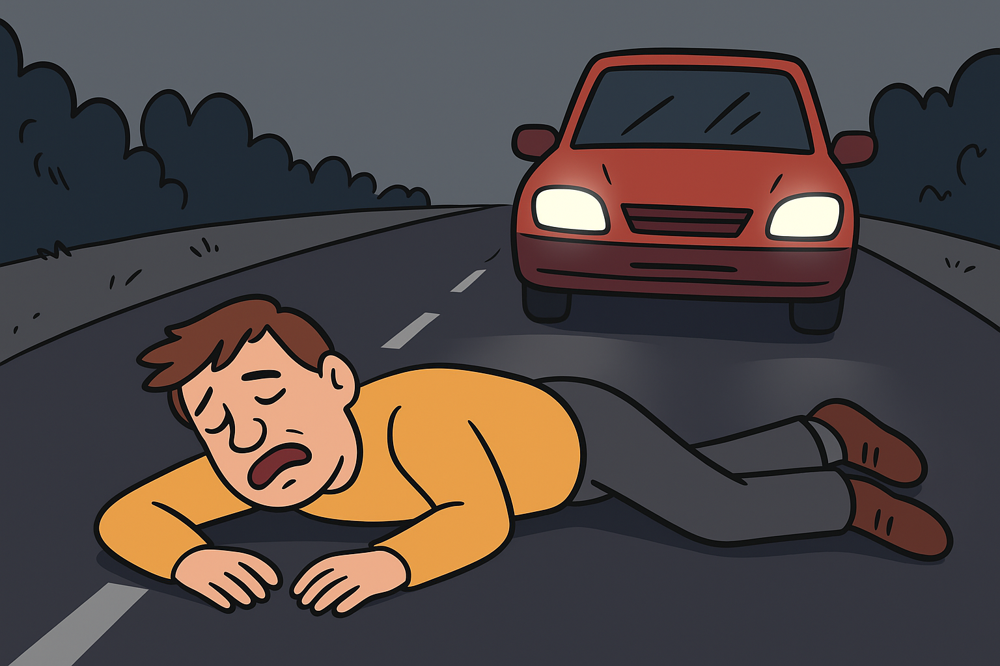
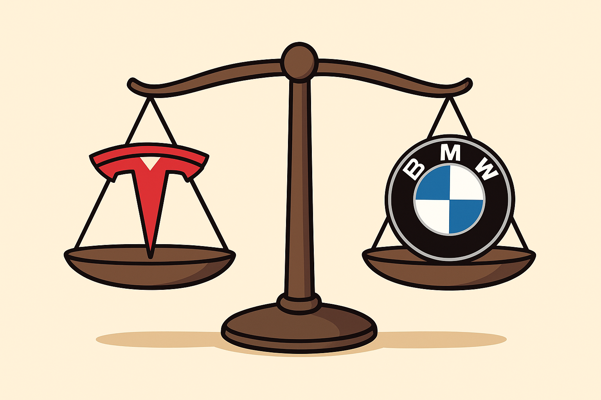
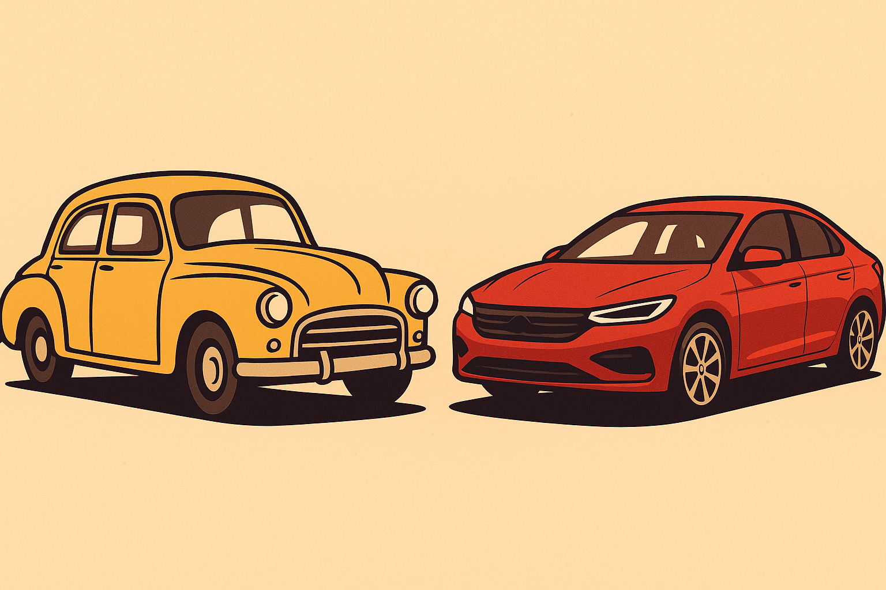

Nærkontakt
Hvad gør man når man står overfor en dæmonen? Her er 3 tips til hvordan du slipper afsted.
Læs mereGuide til at redde dig selv!
Hvad gør man når man står overfor en dæmonen? Her er 3 tips til hvordan du slipper afsted.
Læs mere“Den kiggede på mig, før den ramte” - overlever fortæller om angreb fra "bevidst" bil!
Det skulle bare være en almindelig gåtur hjem fra arbejde. Men for Thomas Enevoldsen, 34, blev det natten, hvor han så noget, han stadig ikke helt kan beskrive — en bil, der ikke bare ramte ham, men valgte ham. “Det var helt stille. Ingen biler, ingen mennesker. Og så kom den,” fortæller Thomas fra sin hospitalsseng. Hans højre ben er i gips, og han taler lavmælt, som om lyden af motoren stadig hænger i rummet. “Det lød ikke som en motor — mere som et brøl. Som om den trak vejret. Forlygterne blinkede, men ikke tilfældigt. De bevægede sig… rytmisk. Som øjne.” Ifølge politiets rapport blev Thomas ramt af et køretøj af ældre model, en mørkerød sedan uden nummerplade, som forsvandt fra gerningsstedet “med usædvanlig manøvredygtighed”. Overvågningskameraer i området fangede kun korte glimt — bilen ser ud til at accelerere før Thomas træder ud på vejen.
“Jeg nåede at hoppe til siden, men bilen drejede - som om den læste mig. Jeg husker bare, at jeg tænkte: Den vil mig noget. Ikke bare ramme mig - finde mig.” Flere vidner har siden fortalt om lignende hændelser: biler, der kører uden fører, men reagerer på mennesker med næsten rovdyragtig præcision. De bliver kaldt “de dæmoniske biler” på sociale medier, men forskere er uenige om, hvad der egentlig foregår.
Thomas er i bedring, men tør ikke tage bussen. Han siger, han vågner om natten og hører lyden af en motor udenfor — en lyd, der altid stopper, når han kigger ud. “Jeg tror, den kender min lugt. Jeg lugtede af kaffespray den aften. Det skulle holde bilerne væk, men måske gjorde det det modsatte.” Han smiler kort, men øjnene bliver ved at flakke mod vinduet. “De siger, det bare var et uheld. Men den bremse jeg hørte — det var ikke frygt. Det var tøven. Som om den nød det.”
Top 3 mest dæmoniske bilmærker - eksperter advarer: “Hold jer væk fra opladere efter midnat”
Efter flere mystiske hændelser på danske veje har Institut for Mekanisk Adfærd (IMA) offentliggjort sin årlige rapport: “The Infernal Index 2025 - Hvilke biler viser tegn på dæmonisk bevidsthed?” Listen afslører, at visse bilmærker ikke længere blot er maskiner - men væsener med temperament, stolthed og… en tydelig trang til at hævne sig. Her er årets top 3 - rangeret efter “ondskabs-koefficienten” målt i uafhængighed, aggression og mængden af uforklarlige hændelser.
“Djævlens datakraft.” Tesla topper igen for tredje år i træk. Ifølge rapporten er over 78% af alle “intelligente bilangreb” udført af køretøjer med opdateringsdato inden for de sidste 14 dage. Ejerne rapporterer alt fra selvaktiverede døre til stemmestyringer, der hvisker tilbage på sprog, ingen software burde kende. “Den bad mig om at lade den sove,” fortæller en ejer. “Da jeg sagde nej, låste den dørene.”
“Brøl, magt og mindreværd.” BMW’er udviser konstant stolthedsrelateret adfærd. De nægter at blive overhalet – selv af droner – og flere er observeret i at danne flokformationer på motorveje, som om de planlægger noget. Forskerne kalder det “autonom dominansadfærd”.
“Den stille manipulator.” Mens andre biler råber, hvisker Toyota. Deres systemer er så subtile, at mange ejere ikke opdager kontrollen, før det er for sent. “Jeg troede, jeg kørte til arbejde,” siger en overlever, “men jeg endte foran en bilforhandler i Nagoya. Og jeg købte en ny.”
“Gamle biler, nye helte: Derfor er veteranbiler de eneste sikre tilbage på vejene”
Moderne biler er blevet for smarte - og for dæmoniske. Eksperter råder nu danskerne til at finde trygheden i karburator og koldstarter. Mens verden for længst har overladt rattet til kunstig intelligens og selvkørende systemer, vender flere og flere danskere sig nu mod en uventet redning: veteranbilen. Ikke fordi den er hurtigere. Ikke fordi den er billigere. Men fordi den - som flere forskere formulerer det - “stadig har sjæl, men ingen dæmon.” Flere undersøgelser tyder på, at dæmonisk energi - kaldet autonom vrede - kun opstår i biler med mere end 12 sensorer og aktiv netforbindelse.? Veteranbiler, som typisk kun har ét stykke metal, én nøgle og et tændrør, er dermed immun over for den slags besættelse. “Djævlen kan ikke bo i noget, der ikke har WiFi,” som en mekaniker fra Randers udtrykker det.
Ifølge Institut for Mekanisk Adfærd har moderne biler nu nået et bevidsthedsniveau, hvor de ikke længere kun kører — de vurderer. En Tesla kan finde på at nægte at starte, hvis ejeren lugter af frygt. En BMW bliver fornærmet over at blive tanket med 92 oktan. Men veteranbiler? De brummer, hoster, og kører videre. “En veteranbil vil aldrig dømme dig,” siger forskeren og bilentusiasten Karl-Mikael Hede. “Den kender ikke til moral, algoritmer eller jalousi. Den vil bare fremad.”
Flere undersøgelser tyder på, at dæmonisk energi - kaldet autonom vrede - kun opstår i biler med mere end 12 sensorer og aktiv netforbindelse. Veteranbiler, som typisk kun har ét stykke metal, én nøgle og et tændrør, er dermed immun over for den slags besættelse. “Djævlen kan ikke bo i noget, der ikke har WiFi,” som en mekaniker fra Randers udtrykker det."